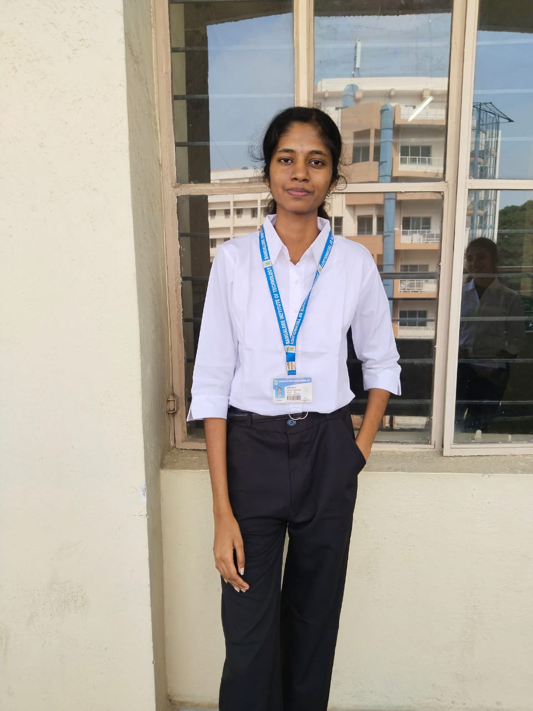

Hello, I'm Apsara
I am a passionate web developer with a strong focus on creating dynamic, user-friendly, and visually appealing websites. With expertise in front-end technologies, I am always looking to learn and improve my craft to create better, more intuitive user experiences.

My Objective
I am an enthusiastic Computer Science undergraduate at Bangalore Institute of Technology, affiliated to Visvesvaraya Technological University (VTU). Passionate about technology and continuous learning, I explore emerging trends while acquiring new skills. With strong communication, teamwork, and adaptability, I strive to contribute meaningfully to innovative organizations.